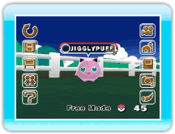
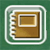

Lorsque tu pointes l'écran, le menu principal
s'affiche.
Choisis une option et appuie sur
.
Wii Menu (Menu Wii)
À la fin de chaque discussion avec Hayley, la partie est
automatiquement sauvegardée et tu peux quitter le jeu.
Connect to DS (se connecter à la
Nintendo DS)
(→p.11)
Tu peux déposer des Pokémon en les transférant vers le
Ranch et les retirer en te connectant avec Pokémon
Diamond ou Pokémon Pearl.
BBS (panneau
d'affichage)
(→p.15)
Pokémon Wanted (recherche Pokémon)
Tu peux voir ici quels sont les Pokémon recherchés.
Ranch Info (infos sur le Ranch)
Tu vois ici le niveau actuel du Ranch, le nombre maximum de
Pokémon que tu peux déposer et le nombre de Pokémon qu'il faut
avoir pour atteindre le niveau suivant.
Options
(→p.16)
Bring Mii (faire venir un Mii)
Tu peux faire venir un Mii qui a été créé dans la Chaîne Mii de
la Wii, et choisir qu'un Mii s'occupera des Pokémon.
Look at My Ranch! (montrer le Ranch)
Si cette option est sur ON, tu peux échanger des photos et des
informations sur le Ranch avec tes amis Wii. Tu peux également
inviter tes amis Wii à venir voir ton Ranch via la fonction
WiiConnect24. (→p.22)
Guest (invités)
Si cette option se trouve sur ON, un invité inattendu peut
venir au Ranch. (→p.22)
Help (aide)
Tu peux voir ici comment jouer au jeu et obtenir des
explications sur les options du menu principal.
Change Mode (changer de mode)
Tu peux passer d’Auto Mode (mode automatique) au Free
Mode* (mode déplacement libre).
* Ce mode n'est disponible que lorsque le Ranch a atteint un
certain niveau.
Deposit Details (détails)
(→p.17)
Tu peux voir ici le nombre de Pokémon déposés et une
Parade de Pokémon. Tu peux sélectionner les Pokémon présents dans
le Ranch via les filtres All (tous), Trainer (dresseur) ou
Favorites (mes favoris).
Take Picture (prendre une photo)
(→p.18)
Tu peux prendre une photo de l'écran actuel. Le chiffre
indiqué en bas à droite te précise combien de photos tu peux
encore prendre.

Album
(→p.19)
Tu peux voir ici les photos que tu as prises. Tu peux
aussi sauvegarder des photos sur une carte SD et les effacer, ou
encore les envoyer sur le Wii Message Board (Bureau Wii).
Look This Way (appeler)
(→p.18)
Cette option te permet d'attirer vers toi l'attention
des Pokémon et des Mii.

 .
.